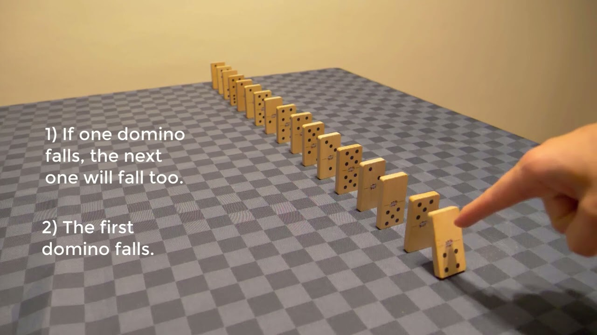

Usando o exemplo de uma fileira infinita de dominos em pe, voce quer provar que todos os dominos vao cair, sem ter que derrubar e checar um por um, oq seria impossivel por serem infinitos.
Usando o exemplo de uma fileira infinita de dominos em pe, voce quer provar que todos os dominos vao cair, sem ter que derrubar e checar um por um, oq seria impossivel por serem infinitos.=.int arr[5], essa variavel na verdade so eh um pointer para algum bloco de memoria, nao um objeto inteiro.void func(int* arr, int size)), e caso tu nao passe o tam dele, a funcao nao vai saber quando parar de ler, podendo causar segment faults.
segment fault: tu tentou mexer num bloco de memoria que nao te pertence/existe mais, e o sistema operacional por motivos de seguranca chutou tua bunda.Alem disso tudo, voce NAO pode usar o copy constructor dele.
ex: arr1 = arr2;
Como eles sao apenas pointers, o arr2 seria um pointer para o mesmo local de memoria do arr1, oq alem de ilegal, eh muito perigoso.
void badContainer()
{
int arrSize{ 5 };
int arr[arrSize] = { 10, 20, 30, 40, 50 };
std::cout << "item 0: " << arr[0] << "\n"; // "Seguro" pq o index [0] existe
std::cout << "item 5?: " << arr[5] << "\n"; // Provavelmente vai printar um numero aleatorio pq o index [5] nao existe entao o pointer aponta pra pro proximo index fora do array, ou seja, memoria suja/lixo. causa undefined behaviour.
std::cout << "item 100000??: " << arr[100000] << "\n"; // index nao pertence ao array e provavelmente, por ser mt distante, nem a pagina de memoria do programa em si. causa segment fault (acessar memoria mt longe).
}
int main()
{
badContainer();
return 0;
}
std::vector sao a implementacao da biblioteca padrao do c++ (STL) e corrige os defeitos do array(fuck you C)..size() sempre retorna o numero exato de elementos do vector;
- Copy ctor completo; se tu fizer vec1 = vec2; o compiler vai criar uma copia completa e independente com todos os dados/membros de um vector pro outro.
- Tem tamanho dinamico; ao contrario do array, o vector pode crescer sem problemas, voce pode comecar ele vazio e adicionar elementos com push_back() por exemplo, e ele gerencia a memoria interna, expandindo-se conforme necessario.
- Pode ser iniciado de forma moderna(C++ 11 adiante); tu pode inicializar vectors com valores facilmente usando a braced inicialization std::vector<int> v = { 1, 2, 3 }; como no C style array.#include <vector>
using namespace std;
void printContainer(const vector<int>& vec)
{
// vec.size() retorna o tamanho correto do vetor
// const type& evita copias desnecessarias, ou seja, parametro passado por referencia
// for simples
for(int i = 0; i < vec.size(); i++)
{
cout << vec[i] << "\n";
}
// for in range
for(const auto& elem : vec)
{
cout << elem << "\n";
}
}
int main()
{
vector<int> vec1(5); // comeca com 5 elem e todos iniciados como 0
vector<int> vec2 = {10, 20, 30}; // direct initialization (C++11 adiante);
vec1 = vec2; // vec1 eh uma copia exata de vec2, redimensionado automaticamente
printContainer(vec1);
return 0;
}
Usando o exemplo de uma fileira infinita de dominos em pe, voce quer provar que todos os dominos vao cair, sem ter que derrubar e checar um por um, oq seria impossivel por serem infinitos.
A inducao matematica diz que tu so precisa provar duas coisas pra garantir que todos os dominos caiam:
Caso Base (Primeiro empurrao): Tu consegue provar que o primeiro domino cai?
Passo Indutivo (Regra da reacao em cadeia): Tu consegue provar que, se um domino qualquer cair, ele obrigatoriamente derrubara o proximo?
Se tu conseguir provar essas duas coisas, a "magica" acontece:

tanto na matematica, como na recursao, tudo precisa de um ponto de partida e/ou de parada.
if que para a recursao.
if (n == 0) return;. Sem isso, o programa roda ad infinitum, ou ate travar :ppra provar que a regra funciona para todos os outros casos, voce diz:
"Vamos assumir que a regra funciona para um numero qualquer $k$, se essa suposicao for verdade, eu consigo provar que funciona pra $k + 1$ (o proximo numero)?"
tu nao ta assumindo que o resultado final eh verdadeiro, tu ta assumindo que a maquina/algoritmo funciona.
ex da escada:
A hipotese indutiva nao eh "eu consigo chegar ao topo".
A hipotese eh "se eu tiver em qualquer degrau, digamos o degrau 5, eu consigo subir pro degrau 6?"
Se tu conseguir provar que consegue subir do degrau 5 para o 6 , e do 80 pro 81, tu acabou de provar que a "passada"(algoritmo) funciona.
Como tu ja provou que consegue subir no primeiro degrau(caso base), entao tu consegue subir a escada toda.

Agora que sabemos isso, podemos estudar o modo que o Weiss faz analise de algoritmos, que ocorre atraves do conceito de recursao, onde ele usa a inducao pra validar tanto a logica de um algoritmo quanto seu custo(tempo de execucao).
Segundo o manolo ai do livro, grande Weiss, entender inducao eh crucial pra entender recursao, e se tu tenta seguir o codigo linha por linha na tua cabeca, tu vai tontear negao.
Por isso que a inducao nos da a regra do design pra recursao:
"Assuma que todas as chamadas recursivas funcionam."
quando tu cria uma funcao recursiva, tu nao pode tentar simular oq o computador vai fazer, tu tem que usar a logica da inducao:
ex fatorial: digamos que queremos calcular o fatorial de 5: $5!(5 \times 4 \times 3 \times 2 \times 1)$.
logica sem inducao(jeito burro, vibe coder):
"5 vezes... espera, preciso saber 4!"
"4 vezes... espera, preciso saber 3!"
"3 vezes... espera, preciso saber 2!"
...
(cerebro cansa, igual o computador)
logica com inducao(10x engineer):
fatorial(1) eh 1
fatorial(4).fatorial(5) eh apenas 5 * fatorial(4)
se tu confia na hipotese(que a funcao sabe resolver o menor problema), a solucao do problema maior se torna obvia.
quando tu vai analisar um algoritmo recursivo, tu nao pode simplesmente contar as linhas de codigo, pq o codigo eh executado repetidamente, gerando relacoes de recorrencia e a inducao eh a ferramenta matematica que tu usa pra resolver essas equacoes de recorrencia e provar o custo de execucao do algoritmo ($O$), ou a famosa notacao *Big $O$.
ex do fibonacci:
long fib( int n )
{
if( n <= 1 )
{
return 1; // Caso base
} else {
return fib( n - 1 ) + fib( n - 2 ); // Passo indutivo/recursivo
}
}e essa seria o flow de analise do algoritmo fibonacci:
O problema (Compound Interest Rule):
Pra calcular fib(5) o computador calcula fib(4) e fib(3), porem, dentro do fib(4), ele calcula o fib(3) de novo.
Tu ta literalmente refazendo o mesmo trabalho dnv, o mano Weiss fala que isso eh violar a Compound Interest Rule (regra dos juros compostos), ou seja, tu ta pagando juros sobre juros de processamento, resolvendo o mesmo problema varias vezes.
A matematica dessa lentidao: se tu desenhar a arvore de chamadas, ou a stack, vai ver que o tempo $T(N)$ pra calcular cresce quase na mesma velocidade que o valor do numero fibonacci. Como os numeros fibonacci crescem de forma exponencial (multiplicando por volta de $1,618$ a cada passo), o tempo tambem cresce assim. Se $N = 40$, demora pra crl. Se $N = 100$, o sol vai apagar antes do programa terminar.
pra nos nao parecermos uns lerdoes chutando "ah, esse eh rapido" ou "esse eh lento", a gente usa umas notacoes matematicas pra classificar o comportamento do algoritmo quando $N$ (tamanho do input) fica gigante.